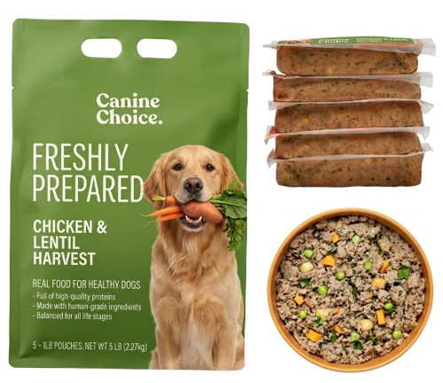
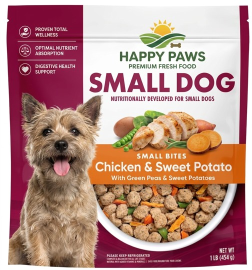
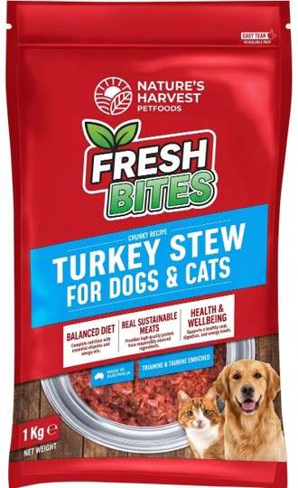
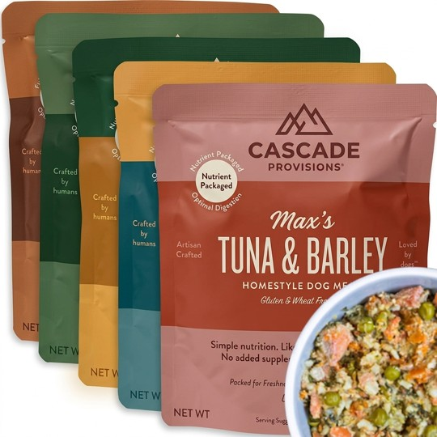
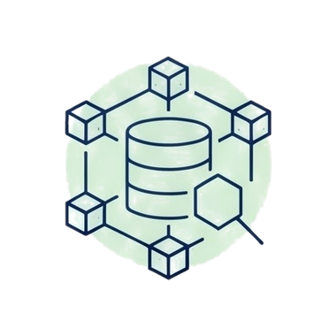
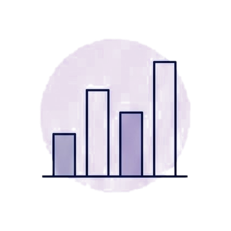
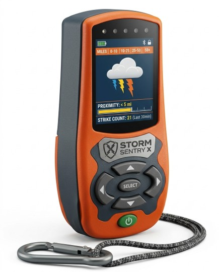
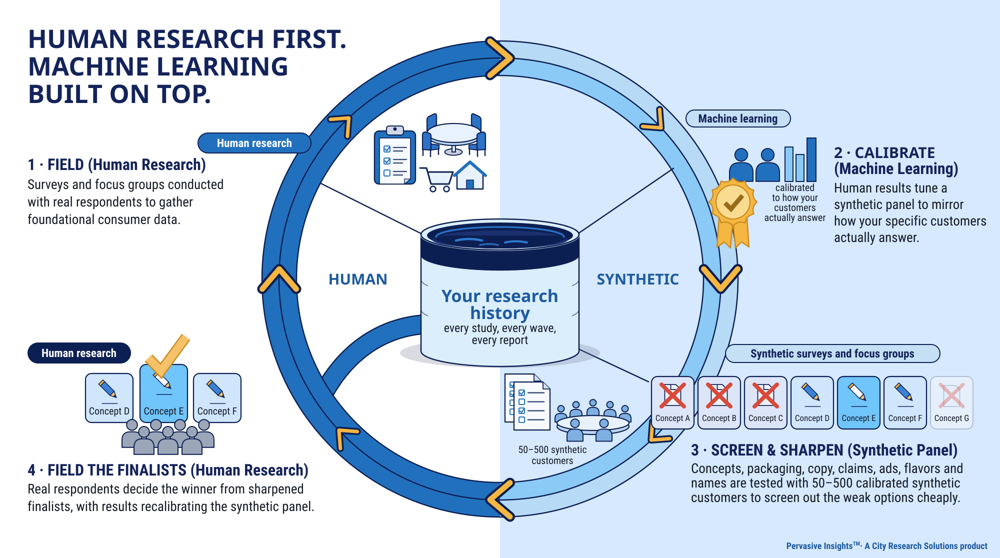

Calibrated to your fielded studies, error published.
Pervasive Insights™ is a synthetic research panel built on a client's own human research: a searchable library of every study the client has run, and synthetic respondents calibrated to how that client's real customers answered, with the error reported topic by topic. It is a City Research Solutions product. City Research has run consumer research since 1979.
Most synthetic-consumer tools generate respondents from a demographic profile, with no evidence that they answer the way your actual customers do. PERVASIVE INSIGHTS™ is built the other way round: a synthetic panel calibrated to how YOUR customers actually answered in 40+ years of human research, with the calibration error published topic by topic — plus every study you have ever run, in one searchable corpus. Interview it, survey it, or sit it around a table, in minutes.




| Package | Synthetic | Human | Δ |
|---|---|---|---|
| Canine Choice | 34% n=68 | 32.1% | +1.9 |
| Happy Paws | 29% n=58 | 27.6% | +1.4 |
| Nature's Harvest | 21% n=42 | 23.9% | -2.9 |
| Cascade Provisions | 16% n=32 | 16.4% | -0.4 |
Your own human data, layered into every synthetic result. Illustrative figures, sample conditions.
There are three kinds of "synthetic." Generated personas are built from demographic filters alone: no customer data, and no evidence of how closely they track real respondents. Data-described personas are built from web analytics or CRM records: they know who your customers are, but their answers are still guesses. Calibrated synthetic panelists are built from your fielded research and checked against it, topic by topic, segment by segment, on a report card you can open any time. Pervasive Insights™ is the third kind. Machine learning is the method; your research is the material.
Two halves, five ways to use them. One half holds every study you have ever run — decks and full datasets — in one indexed corpus you can question in plain language. The other is the calibrated panel of your buyers, ready for any question you would put to a real customer. Every output is cited or calibrated back to the data it came from.
What is actually new: you have been able to analyze your own data for a decade. What you could not do twelve months ago is hold every study you choose to put in — decks and full datasets — in one indexed corpus, with an AI agent over the top, and ask one question across all of it.

Every study you've ever run, indexed in one place and searchable in plain English. One question is answered from across all of them — with a citation back to the exact slide it came from.
Work straight from your raw datasets — all of them at once. One question runs across every matching dataset in your corpus, three waves of a tracker in a single pass, and comes back as one finding with the chart. Then narrow it: by segment, by age, by wave.
Talk with a single calibrated customer profile. One person, one conversation, in their voice — for pressure-testing language or a raw gut reaction.

Field a full survey to 50–500 calibrated respondents and get structured, quantified results back in minutes instead of weeks — fast enough to test several ideas at once.
Sit in on a moderated round-table of your customers. Watch opinions form and shift, catch disagreement, pull quotable verbatims — as a transcript or a report.
This is what each tool actually returns — the same kind of deliverable your team already knows how to read. Categories, respondents, and verbatims here are illustrative for this preview; every live portal is built entirely on your own data.
| Segment | Concept A | Concept B | Lift |
|---|---|---|---|
| Core Enthusiast | 58.0% | 61.5% | +3.5 |
| Practical Owner | 41.0% | 47.5% | +6.5 |
| Premium Seeker | 34.0% | 36.0% | +2.0 |
| Value Shopper | 28.0% | 25.5% | −2.5 |
| Overall | 33.0% | 38.0% | +5.0 |

Anyone can stand up a synthetic panel. Pervasive Insights™ is calibrated to your own commissioned research — and the calibration is auditable. Your human data is layered into every result: where you have asked the same question before, the synthetic result comes back cell by cell against the human answer; where you have asked the same type of question many times, it is placed on the range your real customers gave, and anything outside that range is held for review rather than reported. Below: the same questions run through human respondents and through the synthetic panel. Distributions match within ~3 percentage points on every cell.
For scale: when a real survey is split randomly in half, the two halves agree within 5 points on about 85% of answers (58 consumer studies, 41,340 answer pairs). No synthetic method can beat a human study against itself, and Pervasive Insights™ reports both numbers on the same report card.
Every client sees exactly where the panel lands against their real survey data — topic area by topic area, segment by segment. Nothing is hidden.
Construction check (calibration fit): 92% of 95 cells within tolerance, average gap about 3.5 points. This measures how well the cards match the data they were built from.
Blind holdout (prediction), certified floor tier: median miss about 6.8 points, 42% of cells within 5 points.
For scale: when a real survey is split randomly in half, the two halves agree within 5 points on about 85% of answers (58 consumer studies, 41,340 answer pairs). No synthetic method can beat a human study against itself, and Pervasive Insights™ reports both numbers on the same report card.
| Topic area | Core Enthusiast | Practical Owner | Premium Seeker | Value Shopper | Newcomer |
|---|---|---|---|---|---|
| Functional perception | 3.2 | 3.9 | 2.4 | 3.1 | 2.9 |
| Emotional perception | 3.7 | 2.8 | 3.3 | 3.7 | 2.2 |
| Brand preference | 1.3 | 1.5 | 1.5 | 1.3 | 1.4 |
| Purchase intent | 3.4 | 4.9 | 3.2 | 4.6 | 3.3 |
| Consideration set | 5.9 | 5.8 | 4.2 | 6.2 | 5.1 |
| Price sensitivity | 2.6 | 3.3 | 2.7 | 2.9 | 3.1 |
Behind the report card: roughly 1,080 calibration targets across all 19 marketing topic areas, benchmarked against 40+ years of real human respondent data and re-verified with tens of thousands of independent statistical checks every calibration pass. The synthetic panel doesn't replace your human research — it lets you query that research base instantly between waves.
No new fielding required to start. We build the synthetic panel from data you already have — then keep tuning it as new tracker waves come in.

We index every commissioned study you've run — surveys, focus groups, trackers, ad tests. Years of source data, all in one searchable place.
We build identity profiles calibrated against your actual respondents. Every dimension on every profile is anchored in real data, not guessed — and the error is reported.
6,000 calibrated identities sit in your private portal, ready for any question. They speak in your customers' voice — drawn from your real verbatims.
Search the library, query your data, or run an interview, survey, or focus group in 90 seconds — the same deliverable you commission today, in minutes.
Every dimension on every identity profile is anchored in real survey data. Calibration error is reported per topic area, per segment. Nothing is generated from thin air.
For scale: when a real survey is split randomly in half, the two halves agree within 5 points on about 85% of answers (58 consumer studies, 41,340 answer pairs). No synthetic method can beat a human study against itself, and Pervasive Insights™ reports both numbers on the same report card.
Pervasive Insights™ is the AI suite of City Research Solutions, a consumer research firm that has fielded surveys and focus groups since 1979. The library and the calibrated panel you see here sit alongside a third tool, and all three draw on the same material: research you have fielded with real people.

Pervasive Insights™ is a product of City Research Solutions — a Midwest-based consumer research firm with more than four decades of category experience.
CRS has fielded thousands of commissioned research engagements across categories spanning workwear, outdoor power equipment, outdoor furniture, personal care, food and CPG, tools and hardware, retail, and more. Every Pervasive Insights™ client portal is built directly on top of that client's own commissioned research history — and calibrated against 40+ years of real human respondent experience.
The synthetic panel is not generic. It's yours. And it is the middle of a three-part suite: your research library on one side, a monthly read on your competitive market on the other, with the firm's human research services underneath all of it.
A City Research Solutions product · Pervasive Insights™ 2026 · Visit CRS →
Tell us a little about your category and the kind of research questions you wrestle with most often. We'll send back available times within one business day.